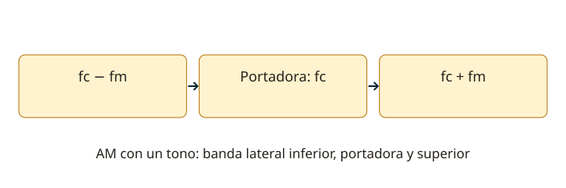

Lección 10 de 16
Modulación: AM, FM, SSB y CW
Entiende qué cambia en la portadora, qué ocupa espacio en el espectro y qué necesita cada detector.
Transportar información
Modular es variar una característica de una portadora según una señal. En AM varía su amplitud; en FM, su frecuencia instantánea; en modulación de fase, su fase. La modulación crea componentes espectrales: una transmisión no es un punto infinitamente estrecho. La señal de audio contiene un intervalo de frecuencias, por lo que el ancho ocupado depende de la información y del método usado.
AM y profundidad de modulación
Con una sola frecuencia de audio fm y una portadora fc, la AM convencional genera componentes en fc y fc ± fm. Su ancho ideal es dos veces la mayor frecuencia moduladora. El índice m puede obtenerse de la envolvente como (Vmáx−Vmín)/(Vmáx+Vmín). Para una sinusoide sin sobremodulación, m ≤ 1. Con m = 1, la potencia media total ideal es 1,5 veces la potencia de portadora. Sobrepasar 100% en un sistema de envolvente produce distorsión y ensanchamiento no deseado.

Banda lateral única
En SSB se transmite una banda lateral y se suprime normalmente la portadora. USB es la superior y LSB la inferior. Un modulador balanceado ayuda a suprimir portadora; un filtro o un método de fase selecciona la banda lateral. Para una banda de audio determinada, SSB ocupa aproximadamente ese ancho y concentra la potencia en la información. El receptor debe reinsertar una referencia mediante un oscilador y detector de producto. Un detector de envolvente simple no recupera bien SSB con portadora suprimida.
FM y fase
En FM, la desviación Δf es el desplazamiento máximo desde la frecuencia central. Para un tono, el índice β = Δf/fm. La regla de Carson estima BW ≈ 2(Δf+fmáx); es una aproximación del ancho significativo. Un limitador reduce variaciones de amplitud antes del discriminador, que convierte cambios de frecuencia en señal de audio. Preénfasis y deénfasis modifican la respuesta de audio complementariamente. Ajustar el micrófono demasiado alto puede producir sobredesviación, no más alcance limpio.
CW y emisiones digitales
En CW se manipula una portadora para formar los elementos del código Morse. Los cambios de encendido y apagado ocupan ancho: bordes demasiado bruscos generan clics de manipulación. La recepción suele usar un oscilador de batido para convertir la diferencia en tono audible. Modos digitales pueden variar amplitud, frecuencia o fase para representar símbolos. El modo operativo y la designación de emisión describen cosas relacionadas, pero no idénticas.
Elegir y medir
AM puede modularse en etapas de bajo o alto nivel; una señal de envolvente variable necesita amplificación posterior lineal. En una señal de envolvente constante pueden usarse otras clases de potencia, con las condiciones adecuadas. Para observar modulación utiliza envolvente, desviación o espectro según el modo. Un vatímetro de lectura media y uno de potencia de envolvente de cresta (PEP) no muestran necesariamente lo mismo en SSB. Mantén toda la emisión dentro de la banda permitida.
Resuelve paso a paso
Leer AM en el osciloscopio
Una envolvente con máximo de 9 V y mínimo de 3 V tiene m = (9−3)/(9+3) = 0,5: 50% de modulación. No se calcula 9/3.
Estimar ancho FM
Con desviación de 2,5 kHz y audio hasta 3 kHz, Carson estima 2 × (2,5+3) = 11 kHz. El filtro, la emisión real y la norma aplicable determinan el uso concreto.
Comprueba lo aprendido: Si fc = 7,100 MHz y el tono es de 1 kHz, ¿dónde están las bandas laterales de AM?
En 7,099 MHz y 7,101 MHz, además de la portadora en 7,100 MHz. No confundas MHz con kHz.
Preguntas oficiales de este tema
Selecciona una alternativa y pulsa «Comprobar respuesta». Si fallas, podrás ver la respuesta correcta para seguir aprendiendo. Las preguntas con incidencias documentales se muestran solo para consulta y no se califican.
Continúa tu recorrido
Fuentes de estudio: programas técnicos y banco SUBTEL, apéndices A–E, versión 06/12/2020, y sus solucionarios oficiales. Reglamentación: Decreto 523, versión 21/06/2013; evaluación: Resolución Exenta 2620/2023. Revisión documental: 11/11/2026. Explicaciones, cálculos y esquemas didácticos de RUFCOM. Consultar documentos oficiales.